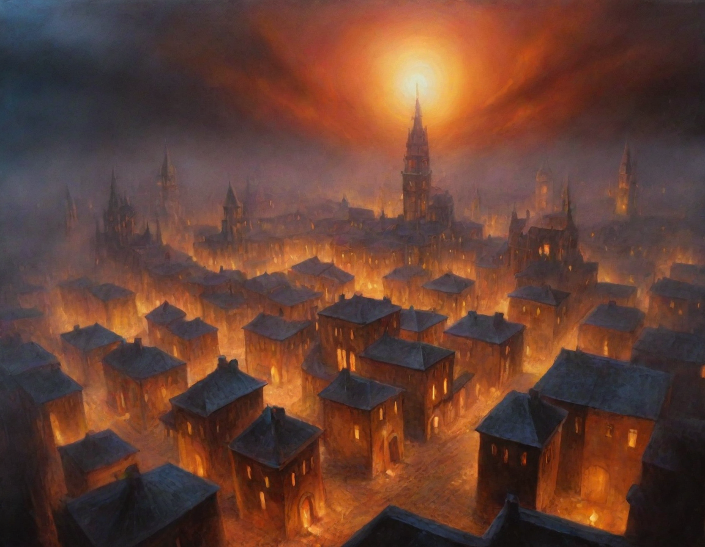

The Legend of Kaida Fireheart
In the mystical city of Luminaria, where magic dwelled in every corner, a young apprentice named Kaida Fireheart protected the realm from darkness. With her trusty staff and elemental magic, she had heard whispers of a sinister plot to destroy the city's ancient artifacts. Determined to thwart it, Kaida set out to investigate, following a trail of clues that led her to the dark sorcerer, Xandros.

Kaida's quest led her through treacherous underworlds and hidden dangers, but finally, she reached Xandros' lair. There, she found the city's most valuable artifact, the Starheart Crystal, being held captive by the dark sorcerer. Xandros revealed his plan to shatter the crystal, unleashing a cataclysmic event that would destroy Luminaria. Kaida knew she had to act quickly, but Xandros' powers were formidable, and his minions patrolled the lair, eager to slay the brave apprentice.

With a burst of determination, Kaida faced Xandros in a final, desperate battle. The two mages clashed, unleashing elemental fury and magical prowess. But Kaida's quick thinking and staff magic proved too much for the dark sorcerer. Together, she shattered Xandros' hold on the Starheart Crystal, restoring balance to Luminaria's ancient magic. As the darkness dissipated, the city was reborn in a warm, golden light. Kaida stood victorious, hailed as a hero by the people of Luminaria. The city's artifacts were safe once more, and Kaida knew that she had truly become a legend in her own right.
